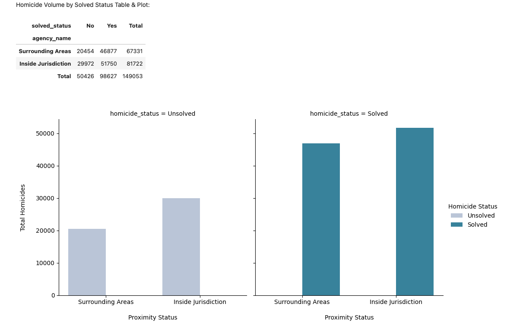
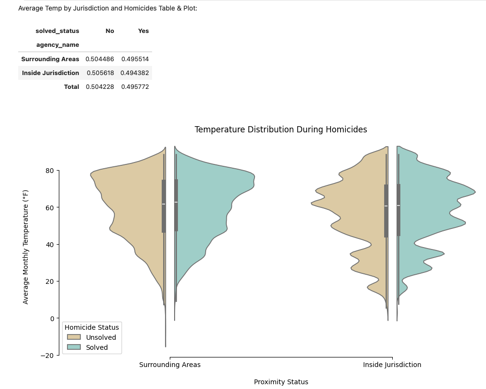
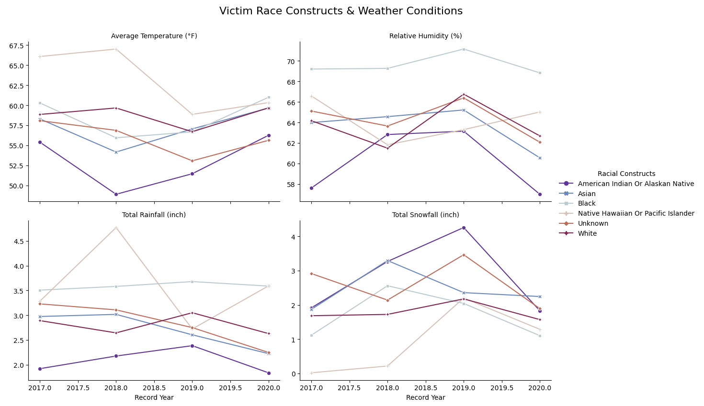
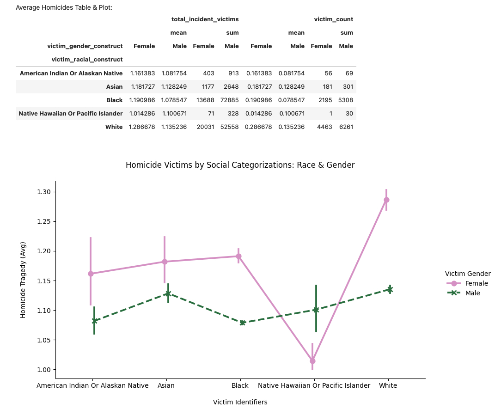
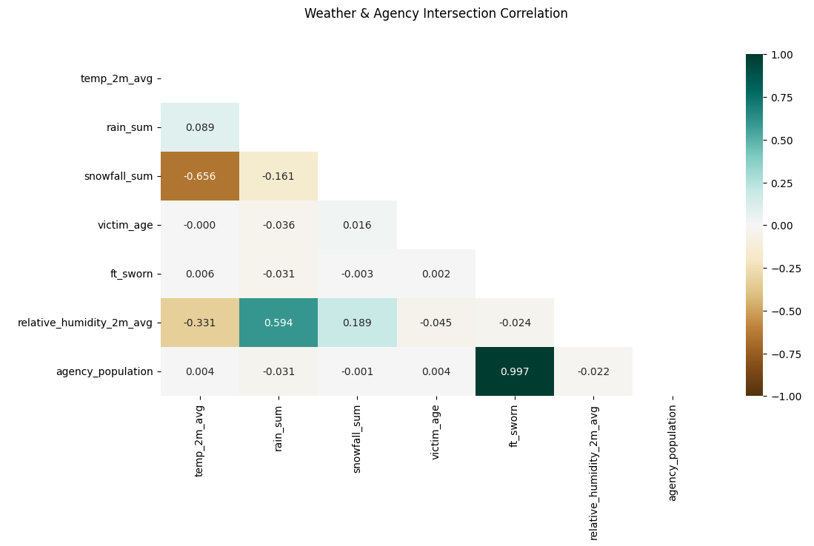

Real World Data Wrangling
Overview
This was the first project in WGU's Advanced Data Wrangling and Data Modeling course, and it walked me through the full data wrangling process from start to finish. First I gathered the data, then I assessed it for issues, and finally I cleaned it up enough to actually answer a research question with it.
I got curious about how homicide rates related to where police agencies are physically located, and I wanted to see if weather and victim demographics played into that pattern too. That curiosity turned into my research question: how do homicide rates vary across areas with different law enforcement facilities, and what patterns show up when you link those incidents to weather conditions and victim demographics? To answer it, I pulled together four datasets, each one gathered for its own reason.
- HIFLD's law enforcement locations data gave me a look at the physical presence and staffing levels of police agencies, since I wanted to explore whether having more law enforcement nearby related to crime rates.
- The Murder Accountability Project's Supplementary Homicide Report gave me my main outcome to explain, the actual homicide records themselves.
- Kaggle's US state and territory latitude and longitude data became the geographic reference I needed to merge everything together at the state level.
- Open-Meteo's historical weather API let me bring in environmental conditions, so I could see if there was any connection between the weather and when and where these incidents happened.
I gathered the first three datasets by manually downloading the source file, uploading it to a GitHub repository, and then loading it back into the notebook through the GitHub API. The weather data came in differently, pulled directly from the Open-Meteo API. Between the manual downloads and the two different APIs, that covered the assignment's requirement to use at least two different gathering methods.
The hardest part of the whole project was the API work, both Open-Meteo and GitHub. I had never built an actual API pipeline before this, so it took a lot of trial and error to get right. I also had to keep going back to the rubric along the way, because it was easy to accidentally veer off from what was actually being asked for.
Gathering Data
Before I could load anything, I had to set up the libraries the project needed. I installed plotnine and geopandas for visualization and geospatial work, pyarrow for reading and writing parquet files, and nbconvert for exporting the finished notebook. Once those were installed and imported, I wrote a small reusable function to talk to the GitHub API. Instead of writing separate fetch code every time I needed a file from my own repository, I built one function that could look through the repository's contents, find any file ending in .geojson, .csv, .zip, or .parquet, and hand back its download link. I used that same function again later on, when I needed to reload the cleaned versions of my datasets after storing them back in the repository.
For the law enforcement, homicide, and state lat/long datasets, the process was the same each time. I downloaded the source file manually, uploaded it to my GitHub repository, and then used my fetch function to pull it back into the notebook through the GitHub API. After loading each one, I ran through the same round of checks. I looked at the column list, counted how many unique values showed up in each column, and checked for missing or null values, so I had a clear picture of what I was working with before moving on to the next dataset.
The weather data from Open-Meteo came together differently, and it was where I ran into my first real API problem. My first attempt tried to request three years of daily weather history for all 61 states and territories in a single call with no pause between anything, and Open-Meteo threw a 429 error because it was too much data at once. To fix it, I split the request into six smaller batches of about ten locations each and added a 30-second pause between every request, so the API had time to recover before the next call came in. I also wrapped the whole thing in error handling for HTTP errors, timeouts, and general request failures, so if something did go wrong I would get a clear message telling me what happened instead of the notebook just crashing.
Once I had all four datasets loaded, I saved the raw data locally so I would not have to re-run the API calls or GitHub fetches every time I reopened the notebook, and I generated downloadable links for each file so I always had a way to double check them.
Assessing Data
Once all four datasets were loaded, the next step was figuring out exactly what was wrong with them before I could clean anything. The course breaks assessment into two categories, quality issues and tidiness issues. Quality issues are about the values themselves, things like inconsistent naming, incorrect data types, or missing information. Tidiness issues are about the structure of the table itself, things like a single column holding more than one piece of information, or a table stuffed with columns that do not belong to the same observation.
On the quality side, the clearest example showed up in the law enforcement dataset. All 37 of its columns used all capital letters with no separation between words, things like NAME and FTSWORN, which is inconsistent with the lowercase, underscore-separated naming convention that makes columns easier to read and type in code. I renamed each one to something clearer, so NAME became agency_name and FTSWORN became ft_sworn, along with similar fixes across the rest of the columns.
The tidiness issues were more about structure than naming. In that same law enforcement dataset, the VAL_DATE column packed the day of the week, the date, and a timestamp all into one string, something like "Mon, 30 Jun 2008 00:00:00 GMT." Following the rule that each column should hold exactly one variable, I split that single string into separate day, month, and year columns. The homicide dataset had a similar problem, with its CNTYFIPS column combining the county and state into one value instead of two. On top of that, the law enforcement dataset only needed 10 of its 37 columns for this analysis. The other 28 were administrative metadata that had nothing to do with law enforcement strength, so tidy data principles said they should not be sitting in the same table as the data I actually needed, and I dropped them.
I ran through those same two checks, cleanliness of the values and structure of the table, for all three datasets, and that is what let me trust the data enough to move into cleaning it.
Cleaning Data
Before touching anything, I made copies of all three assessed datasets, the law enforcement data, the homicide data, and the weather data, so the original raw versions stayed untouched no matter what went wrong during cleaning.
The first fix carried straight over from assessment, renaming every column to the same lowercase, underscore-separated style across all three tables so the keys would line up cleanly whenever I needed to merge them later. From there, I converted repetitive text columns, things like agency type, victim race, and weapon used, into pandas' category dtype, and downcast oversized numeric columns like latitude, longitude, and age into smaller number types. The payoff was a big drop in memory usage. The law enforcement dataset dropped from 4.1 MB down to 1.8 MB, the homicide dataset went from a bloated 242.8 MB down to a lean 15.4 MB, and the weather and state dataset went from 6.5 MB down to 2.8 MB.
With the data types cleaned up, I moved on to the structural fixes. The VAL_DATE column that had been packing a day of the week, a date, and a timestamp into one string got split into separate day, month, and year columns, and the homicide dataset's combined county-and-state column got split the same way into its own city and state columns. Once every table only held the columns relevant to the analysis, I filtered each dataset down to just those columns and to the 2017 through 2020 date range the project focused on.
The last step was combining everything into one dataset. I merged the homicide data with the weather data on state, month, and year, then merged that result with the law enforcement location data on city, state, and year. Since each table had already been cleaned and typed consistently, actually joining them together was fairly straightforward. After dropping any duplicate rows that came out of the merge, I saved the final combined table as a single parquet file, weather_homicide_nationalagency_df.parquet, since parquet keeps each column's data type intact instead of flattening everything back down to text the way a csv would. From there, I uploaded the cleaned file back to my GitHub repository so it was ready to be reloaded for the analysis.
Answering the Research Question
After all that gathering, assessing, and cleaning, I finally had one clean dataset to work with, and I could return to the question I started with. How do homicide rates vary across areas with different law enforcement facilities, and what patterns show up when you connect those incidents to weather conditions and victim demographics? Here is what the data actually showed.
- Homicides mostly happen close to law enforcement, not far from it. I split the homicide records into two groups, cases that fell inside an agency's immediate jurisdiction and cases that fell in the surrounding areas, then compared the counts. Over 82,000 homicides happened inside a jurisdiction compared to roughly 67,000 in the surrounding areas, and that pattern held whether the case was solved or not. That told me direct law enforcement presence carries most of the homicide volume, which goes against the assumption that most incidents are spread out across the wider region around a police agency.

- Temperature does not predict whether a case gets solved. Comparing the average monthly temperature during solved and unsolved cases showed almost identical, overlapping ranges, with unsolved cases running only about one degree warmer on average. Weather might set the backdrop for when a crime happens, but it is not doing anything to explain why some cases get closed and others do not.

- The weather surrounding a homicide changes depending on the victim's racial background. Tracking average temperature, humidity, rainfall, and snowfall by victim race from 2017 through 2020 showed that incidents involving Black and Native Hawaiian victims tended to happen in warmer, wetter conditions, while incidents involving American Indian victims tended to happen in colder, snowier conditions. That points to certain groups being more frequently affected under distinct and shifting weather patterns rather than one uniform climate applying evenly across the board.

- Male victims make up most of the deaths, but female victims are more likely to die in multi-victim incidents. Looking at the raw totals, male victims accounted for the overwhelming majority of homicides, reaching into the tens of thousands across several demographic groups. But when I looked at the average number of victims per incident instead of the total, the pattern flipped, with female victims tied to more casualties per incident across almost every racial group. White female victims had the highest average, at roughly 1.3 victims per incident, meaning that although homicides involving female victims happen less often overall, those incidents are more likely to involve more than one victim.

- Weather has almost nothing to do with victim age or how many officers patrol an area. A correlation matrix across temperature, rainfall, snowfall, victim age, number of full-time sworn officers, humidity, and agency population showed exactly what you would expect between the weather variables themselves, more rain meant higher humidity, lower temperatures, and more snowfall. It also showed a near-perfect correlation between agency population and the number of officers, since larger communities simply need more police. But none of the weather variables showed any real relationship with victim age or the size of a police force, which means everyday weather does not seem to influence either of those things.

Looking back, if I had more time, there are a few directions I would want to dig into further. I would look more closely at victim demographics alongside the specific weapons used to better understand what is actually driving these incidents. I would also want to bring in offender demographics and their relationship to the victim to look for recurring patterns or risk factors. And I would want to break the geography down further than the city level, down to something like zip codes, since the broad surrounding areas in this analysis might be smoothing over smaller, more specific clusters that a closer look could reveal.
Conclusion
This project ended up being less about the final research question and more about learning how to actually get to a research question in the first place. Gathering four different datasets, through manual downloads and two separate APIs, forced me to slow down and build a real process instead of just grabbing whatever file was easiest to find. Assessing each dataset for quality and structural issues before touching any of the actual cleaning taught me to separate whether a value was wrong from whether a table was shaped wrong, which is a distinction I did not think about clearly before this project. And cleaning everything down to one combined dataset with the right data types showed me just how much smaller and faster data can run once it is actually organized the way it should be.
Once I had that clean dataset, the research question itself turned out to have a clear answer. Homicides cluster close to law enforcement rather than spreading out into surrounding areas, weather patterns around these incidents shift depending on the victim's race, and female victims, while less common overall, are more likely to be part of a multi-victim incident. Weather, on the other hand, had almost nothing to do with whether a case gets solved or how large a local police force is.
As the first project in the Advanced Data Wrangling and Data Modeling course, this set the foundation for everything after it. The biggest lesson I am taking forward is that the API pipeline work, batching requests, handling errors, and following the rubric closely enough not to veer off course, is a skill on its own, separate from the analysis it eventually supports.